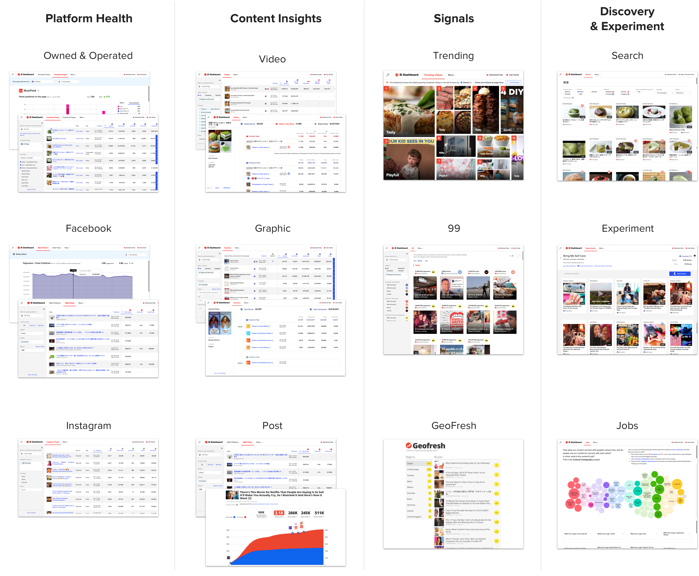
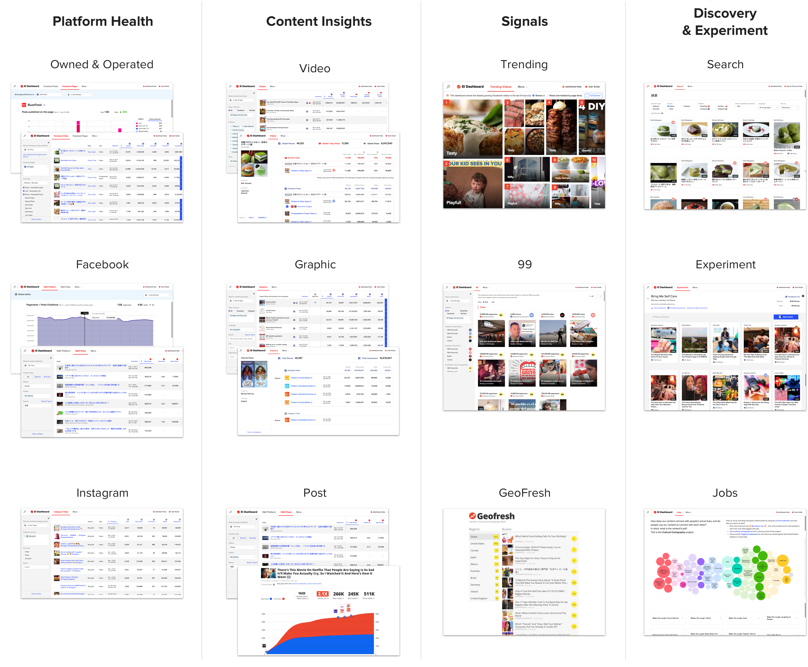

BuzzFeed’s analytics tools
Building a suite of analytics tool to empower data-driven decisions
BuzzFeed’s analytics tools
Building a suite of analytics tool to empower data-driven decisions
BuzzFeed creates and publishes over 500+ videos, posts, and graphics a week to our owned & operated properties and many social platforms like Facebook or Snapchat. We get data back about how our content connects with our audiences from metrics like pageviews, shares, and retweets. The knowledge held in this data helps us to understand what resonates with them; consequently powers the feedback loop: Create ➝ Publish ➝ Learn ➝ Iterate.) for our content creators to make better, more engaging content.

Data plays an integral role to our editorial and business strategy. My team Reporting Tools was formed 18 months ago and tasked with this mission: Empower the entire organization to make data-driven decisions with a suite of analytic tools that are built by a dedicated team of product managers, engineers, designers and data-scientist that are hyper-focused and adaptable to meet the ever-changing needs from our editorial and business users.
As the sole designer in the Reporting Tools team, I lead the design and execution of all the dashboards, slack notification, and training collaterals. More recently, I also take on product mangement role in driving the strategy and vision for Search, Audience dashboard and improvements on the Content Insights dashboards.
Define ⟶ Explore ⟶ Refine ⟶ Promote ⟶ Learn
1 Define Define the problems by deeply understanding the user and business goals. The methodology and tools for this include user/stakeholder interview, workflow/product audit, design sprint workshop, worksheets, and thought exercises.


2 Explore the solutions in a broad spectrum to validate its viability, feasibility, and usability. With data products, I prefer prototypes with real data to minimize speculative risks, suss out unforeseen uses cases and get actual feedback from our users. I often use a mix of static (paper mocks, click-through screens) and live prototypes (live code, spreadsheet, 3rd-party products.)


3 Refine the product and design to achieve the most effective and scalable solution. "Is this intuitive to the users?" "Does the placement of this new filter feels natural to the users?"
To ensure our tools can grow gracefully, I also establish a design system for the dashboard suites which includes the UI architecture, UI pattern, graph components and accessibility-friendly color palettes, which I shared the knowledge with front-end engineers.


4 Review the final UX. Building off dummy data could still open room for errors. A thorough review helps to ensure the product quality as expected.
5 After shipping, promote and onboard the new product/features to our users in a 3-pronged strategy: in-app promotion (onboarding modal and promotion units), customized in-context product announcement, and in-person demo session. For our users in different time zones, we create thorough documentation such user guides, cheatsheets, and FAQs to help them get acquired with our tools on their own.


6 Learn and build
The user problems have evolved quite a bit in the last 2 years. Let's start from the beginning.
The demand for data is growing drastically. Our data analysts were drowned by requests from different parts of the company and unable to keep up the demand. For the data consumers, accessing data was tedious. People spent more time hunting down data or cobbling stat from 3rd party tools and spreadsheets than making the analysis. Because of the high friction to access data, many folks gave up and resorted to subjective ways to set goals and make tactical decisions. There was no consistent way to measure content success that actually helps drive impact to the company.
The goal at the time: Making the most essential datasets in an easy, fast and well-organized design for our editorial users was the top priority.
Solutions: Create the first content insight dashbaords that addressed those pain points by providing key performance metrics for a given piece of content. The table-based design powered by a set of robust filters, search and sorting, is efficient and flexible for exploring the large dataset. Users can look up “What are the most popular videos about Béyonce?”, or “What are the most commented news post from last week?”, and then drill down to dive into the detail stats.


üôÖ Failed first attempt Known as the Content List, the first dashboard we built was based on an assumption that a one-size-fill-all product would satisfy everyone's needs. The unclear use case along with the unforeseen engineering challenge forced us to kill the dashboard shortly after its completion. Since then, our team learned to be critical of product decisions, and evaluated every project by the user impact and team effort before design and development.

As getting data about a piece of content became easier, our users started to wonder about getting insights on the most important "signal": What is the exceptional performing content? Which content shows the early signs of going viral? What are the important "signal" we should act on and go after the success?"
The goal at the time: Surface noteworthy signals in real-time about outstanding and trending content to help our editorial team to optimize the content success further. For content distribution team, they can fuel the viral content further by distributing to other platforms, channels or countries. our content creators feel rewarded and motivated to push for success.
Solutions: Designed signal-based products to communicate success and trending that are iconic and visible.


Most of the outstanding content and viral hits that are beloved by our audience is a result of content experimentation. However, tracking the performance for any custom grouping of content based on a common subject or intent remained very difficult. Editorial leads often resorted to a manual process to log the data into a spreadsheet and aggregate the result.
The goal at the time: Facilitate the ideation and experimentation process by providing toolings to make tagging, searching and learning a grouping of content easier.
Solutions: Create tools to help users to ideate and track experiment and through content discovery (Search), custom tagging (Experiment) and content intent analysis. (Jobs)


Despite easy access to data and detect outliers, our editorial leaders have a hard time tracking the overall health and long-term trends of our core distribution platforms, like BuzzFeed's owned and operated and Facebook. As the audience's media consumption and the distributed platform is evolving quite a bit in the past year, able to optimize our content outputs to maximize the returns in audience engagement becomes critical to our business.
The goal at the time: Provide tools to monitor the health of the core distributed platforms that enables our management and editorial lead to easily track short- and long-term changes, and make timely decisions on the editorial and distribution strategy to adjust the market changes.
Solutions: Develop a health platform dashboard for Facebook and O&O our two main distribution platforms. The dashboard consists of several time-series graphs that track the content output and the key engagement metrics side-by-side. Most of the metrics have a strong correlation where the changes in one metric could reveal the changes in another. One of the novels features is pinning, which let users click and mark any date across all graphs so the user can compare the changes of those metrics across the same point in time.


While those big initiatives were happening, our team was also gradually expanding the dashboard suite by increasing our data coverage for the entire organization. Today, El Dashboard has grown into a suite of 12 dashboards and evolved into four categories of tools: Content insights, Signal, Discovery & Experiment, and Platform Health.
El Dashboard continues to grow and thrive as the core analytic tools for the company. With over 500 active users a month, (35% of the entire organization), users are continuously relied on our tools to learn and make the data-driven decision every single day. The dashboard helps us to discover our users love food content, especially fluffy and jiggly dessert.

We recently expanded our users base to the Business division on growing our advertising, native contents and brands.
The dashboard has enabled our content creators to learn and experiment in a rapid pace that enables viral hits and engaging ideas one after another.
Role: Design Lead. Amazing Team: 5 engineers, 4 data scientists, 1 product managers, 1 product support.